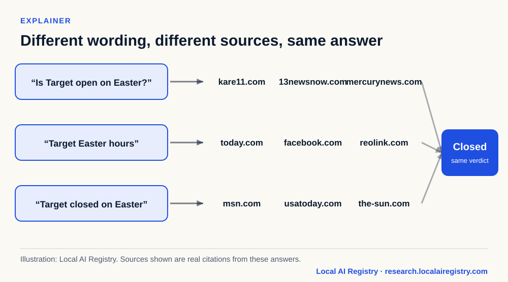
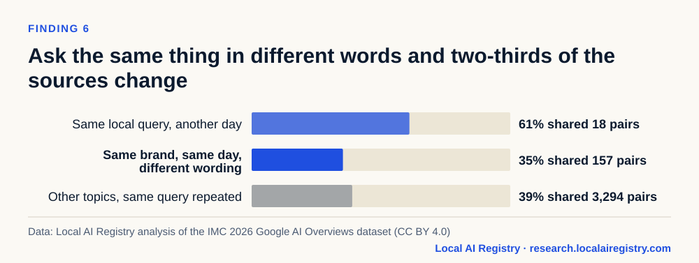

How do I get my business recommended by ChatGPT?
How ChatGPT chooses local businesses
For local questions, ChatGPT usually searches the web before answering. It reads a handful of results, including review sites, maps listings, local guides and business websites, then writes a short answer that names a few businesses. When it shows sources, those are the pages that shaped the answer.
OpenAI has not published a full list of the data providers behind its local results, so the practical approach is to be strong in the places it is seen to cite: review platforms, local best-of lists, news and your own site.
- In New York, ChatGPT put four different surgeons first across six asks of the same question on Nov 13, 2026.
- After its list, ChatGPT asked follow-up questions: the result the person wants, first surgery or revision, and in one run their budget.
- Most entries quoted a RealSelf rating and review count.
When ChatGPT got the same local question about 39 minutes apart, a median of 29% of the businesses it named appeared in both answers (8ight.AI, reviewed in our brief). How Often AI Recommends Your Business, LAIR-R-2026-002
Only 3.5% of businesses ChatGPT named in localized searches appeared at every test point across a town (BrightLocal, reviewed in our brief). How Often AI Recommends Your Business, LAIR-R-2026-002
ChatGPT declined to recommend an orthopedic surgeon in 52.8% of 40,500 persona-based requests (Haupt et al., 2026, reviewed in our brief). How Often AI Recommends Your Business, LAIR-R-2026-002
What our research found
From The Local Answer Gap, our study of how Google's AI answers local business questions, and AI Answer Watch, our screenshots of ChatGPT's answers. Every number links to its chart.






What we saw when we asked ChatGPT 16 local questions
On Nov 13, 2026 our research team asked ChatGPT 16 local questions, three times each, and screenshotted every answer. The table counts how many different businesses came back across the three asks, and how many were named every single time.
| Question | Different names | Named all 3 times |
|---|---|---|
| “best Botox injector in Newport Beach” | 10 | 0 |
| “best aesthetic clinic in Beaconsfield” | 5 | 3 |
| “best aesthetic clinic in London” | 10 | 1 |
| “best breast augmentation surgeon in NYC” | 7 | 3 |
| “best closed rhinoplasty surgeon in Los Angeles” | 6 | 3 |
| “best lip filler in Newport Beach” | 9 | 1 |
| “best plastic surgeon in New York City” | 12 | 1 |
| “best rhinoplasty surgeon in Atlanta” | 7 | 3 |
| “best rhinoplasty surgeon in Chicago” | 6 | 4 |
| “best rhinoplasty surgeon in Dallas” | 7 | 1 |
| “best rhinoplasty surgeon in Houston” | 6 | 4 |
| “best rhinoplasty surgeon in Miami” | 5 | 4 |
| “best rhinoplasty surgeon in New York” | 13 | 0 |
| “best rhinoplasty surgeon in Phoenix” | 7 | 4 |
| “best rhinoplasty surgeon in San Diego” | 6 | 3 |
| “best rhinoplasty surgeon in Scottsdale” | 6 | 3 |
Two patterns stand out. In crowded markets like New York, ChatGPT gave a different shortlist almost every time: 13 different names for one rhinoplasty question, and nobody made all three lists. In smaller markets the shortlist was steadier. So being named once proves very little. What matters is how often you're named across many asks, which is exactly what we measure for clients. Every screenshot is public in AI Answer Watch.
How we check ChatGPT for you
ChatGPT is part of every client's monthly check. We ask it the questions your customers ask, anchored to your town, and save the answer with a screenshot. You see whether you were named, who was named instead, and how that changes month to month. See how AI monitoring works.
What to fix first
These signals carry the most weight for ChatGPT, in order:
Reviews, ratings and replies across sites.
A place on the local best-of lists AI quotes.
Features about you on independent sites.
Same name, address, phone and hours everywhere.
A fast site with the code AI reads.
Three things to do this week
- Ask ChatGPT the questions your customers ask and click every cited source. That list is your to-do list.
- Make sure every service you want to be known for has its own page; ChatGPT often quotes service pages directly.
- Keep your hours and phone number identical on your site and every listing, because ChatGPT repeats them to customers.
ChatGPT for your industry
The questions customers ask differ by industry, and so do the rules. See the guide for yours:
Other assistants
Ask AI what your customers ask
These are real questions customers type. Ask each one twice, in a new chat each time, and write down who gets named and which sources are cited. That list is your to-do list.
“best med spa near me for Botox”
“best plastic surgeon in your city for rhinoplasty”
“dermatologist accepting new patients near me”
“dentist near me accepting new patients”
“best LASIK surgeon in your city”
“best dispensary near me”
Frequently asked questions
Can I pay ChatGPT to recommend my business?
There is no paid placement inside ChatGPT's local answers today. Recommendations come from what it finds about you on the web.
Why does ChatGPT give different businesses each time?
Answers vary with wording, location and the sources it happens to read. Businesses that are strong across many sources show up most consistently.
Named in AI in 90 days. Guaranteed.
Book a call and we’ll show you, live, what AI says about you today. If we miss the 90 days, we keep working for free until AI names you.